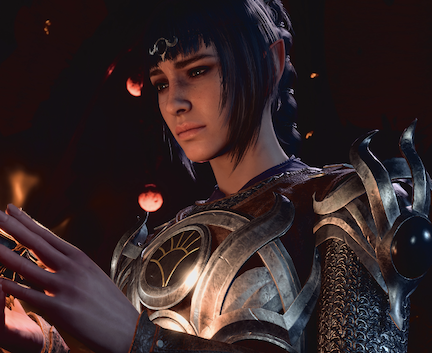

STR: 13 | DEX: 13 | CON: 14 | INT: 10 | WIS:17 | CHA: 8
Shadowheart is a Half-Elf and a Trickery Domain Cleric, which gives your party heals, buffs and interesting stealth and deception spells. You can start the questline "Daughter of Darkness" for Shadowheart's personal backstory. A loyal cleric of Shar, Shadowheart is the sole survivor of a holy mission undertaken on the Mistress of the Night's behest. She alone must deliver a relic of immense power to her coven in Baldur's Gate, while threatened by a strange new magic that is burgeoning from within.